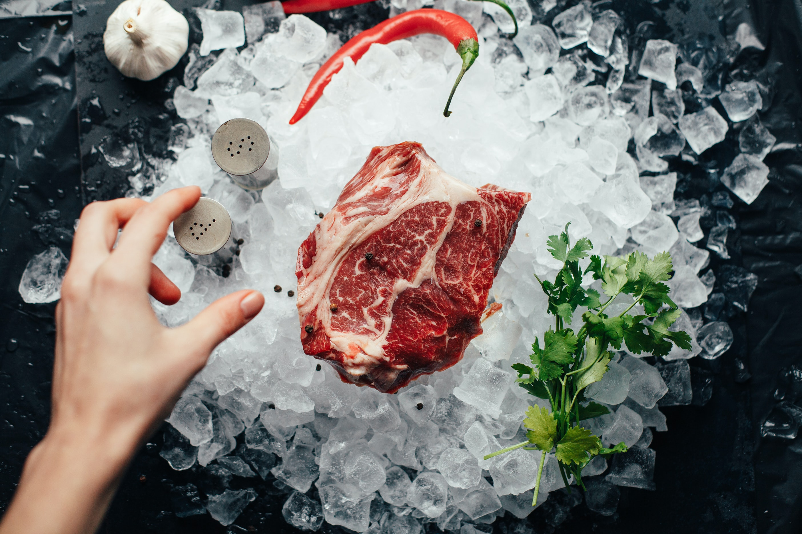

SHIMON'S the Chef's Steakhouse
Our philosophy is simple: treat guests like family, serve excellent food and always exceed expectations. This philosophy was born in 1989, when we opened the first restaurant in Jerusalem. From day one, all employees shared their commitment to quality and generosity with every guest who passed by their doors. What started as a restaurant has become a second home for a vibrant team of artists and writers, tycoons and civic leaders, screen stars and working families. And so it continues today ... a place not only to enjoy a spectacular meal but also to catch up with old friends, meet new ones, close deals and celebrate family milestones. The restaurant continues to serve as a place where you can take a moment, connect through real conversations and enjoy an extraordinary meal with the important people in your life. Our philosophy is simple: treat guests like family, serve excellent food and always exceed expectations. This philosophy was born in 1989, when we opened the first restaurant in Jerusalem. From day one, all employees shared their commitment to quality and generosity with every guest who passed by their doors. What started as a restaurant has become a second home for a vibrant team of artists and writers, tycoons and civic leaders, screen stars and working families. And so it continues today ... a place not only to enjoy a spectacular meal but also to catch up with old friends, meet new ones, close deals and celebrate family milestones. The restaurant continues to serve as a place where you can take a moment, connect through real conversations and enjoy an extraordinary meal with the important people in your life.
OUR CHEF
Chef ***** is considered one of the chefs who leads the personal creative cuisine in Israel. In 2013 he founded the steakhouse and since then he uses the restaurant as a stage for the updated culinary creation that characterizes it. With an emphasis on selecting and directing the finest chunks, And of course you can end your meal with one of the place's delicious desserts. Vanilla Propitrol Crispy puffs stuffed with a scoop of Italian vanilla ice cream and covered with fine chocolate cream. Whatever you order, the emphasis with us will always be on the freshness of the food and its preparation immediately upon receipt of the order. The place is warmly decorated with beautiful curtains and rustic wooden furniture. The restaurant has a warm and happy atmosphere, with quiet background music in the style of blues, jazz and soul adds a captivating style. The crowd that comes to us from all walks of life aged 18-70 enjoys a pleasant, delicious and rewarding pastime, and is drawn to the place again and again and again. In 2013 he founded the steakhouse and since then he uses the restaurant as a stage for the updated culinary creation that characterizes it. With an emphasis on selecting and directing the finest chunks, And of course you can end your meal with one of the place's delicious desserts. Vanilla Propitrol Crispy puffs stuffed with a scoop of Italian vanilla ice cream and covered with fine chocolate cream. Whatever you order, the emphasis with us will always be on the freshness of the food and its preparation immediately upon receipt of the order. The place is warmly decorated with beautiful curtains and rustic wooden furniture. The restaurant has a warm and happy atmosphere, with quiet background music in the style of blues, jazz and soul adds a captivating style. The crowd that comes to us from all walks of life aged 18-70 enjoys a pleasant, delicious and rewarding pastime, and is drawn to the place again and again and again.